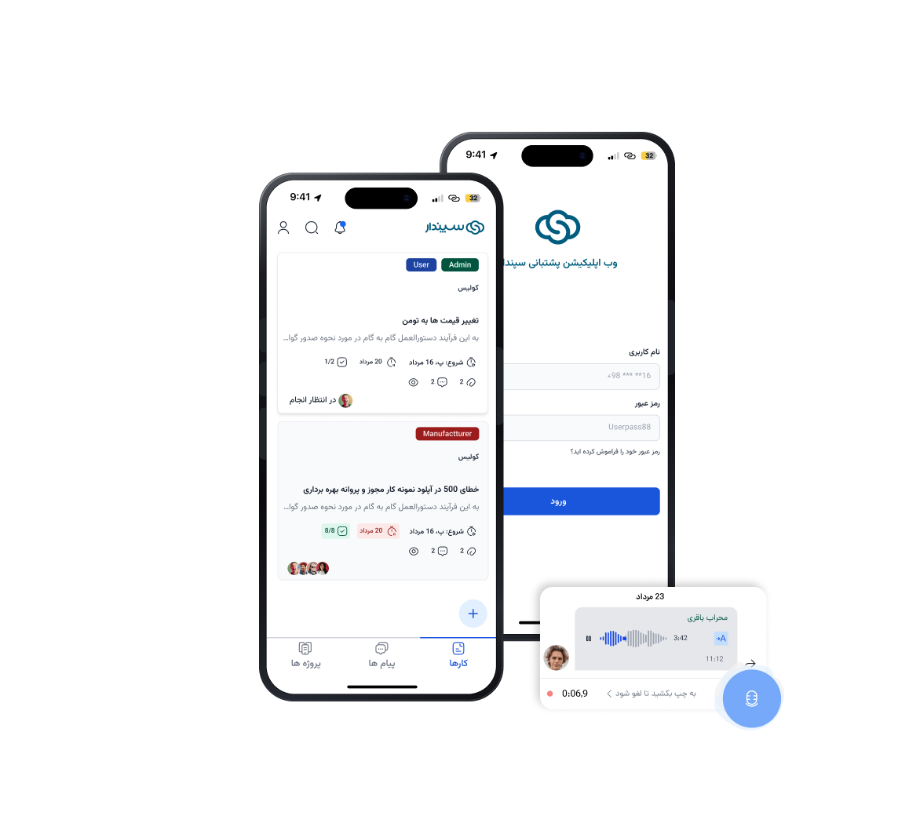
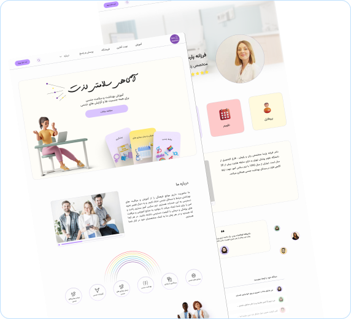
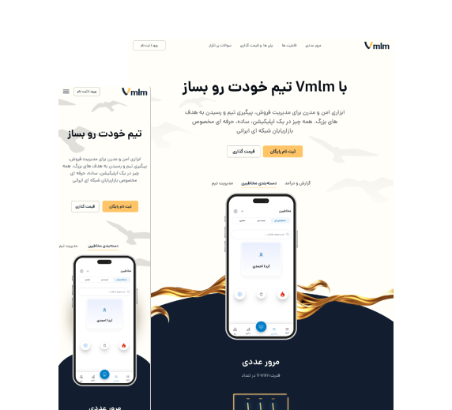

PRODUCT DESIGN · 2024
One place for every
project request.
Designing a unified workflow for communication, task management, project progress, and payments.
View case study ↗
Hello, I’m Aida Ahmadi Araghi ✦
Product designer with 2 years of hands-on UX/UI experience. I turn complex problems into useful, friendly products people enjoy coming back to.
↓ Explore selected workSelected work
PRODUCT DESIGN · 2024
Designing a unified workflow for communication, task management, project progress, and payments.
View case study ↗

UX DESIGN · 2024
Designing an accessible educational experience through research, UX, and UI as part of a three-person product design team.
View case study ↗WEB REDESIGN · 2023
A responsive landing page redesign focused on clearer content hierarchy, layout, and user flow.
View case study ↗
A LITTLE MORE ABOUT ME
I care about design that earns trust: accessible, useful, and made with a deep understanding of the people on the other side of the screen.